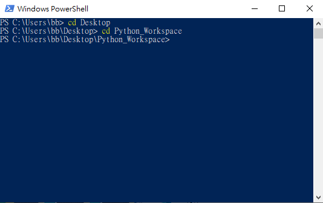
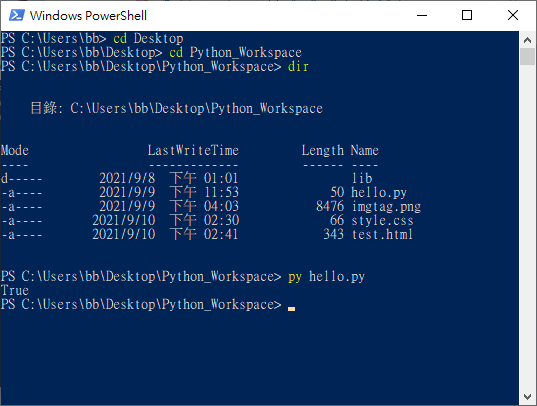

程式語言
程式語言用於開發實作專案，不同的專案，開發者挑選符合需求的程式語言來完成專案。大部分的程式語言具相同基本架構如變數、資料類型、運算子、條件、迴圈、函數、物件等，不同的是個別程式撰寫語法或提供的功能多寡而以，這裡所謂的語法是指程式語言撰寫的方式，就像日常語言中文有中文寫法，英文有英文的寫法等。所以學習程式語言應著重於解決思考能力的培養，因為大部分的程式撰寫方式是相同的，課程以Python為開始，除了容易撰寫的特性之外，Python也是後續課程(資料分析、大數據、物聯網與人工智慧應用等)與業界會用到的工具。
軟體安裝
Python安裝須包含整合開發環境(IDE-Integreated Development Environment)，市面上有許多Python IDE(PyCharm、Atom、Spyder、VSCode等)，課程使用微軟開源Visual Studio Code，要使用VS Code開發Python，軟體下載與安裝步驟如下：
1. 下載並安裝Visual Studio Code(安裝程式編輯器，執行後請按下一步直到安裝完成)
2. 設定VS Code顯示語言為中文(點選左邊橘色延伸模組並在黃色搜尋方塊輸入chinese language)後，選擇中文(繁體)並選install進行安裝，圖片顯示已安裝符號，安裝後軟體會要求重啟，重啟後選單命令會改為中文。
3. 下載最新版本Python，點選下載安裝程式並按滑鼠右鍵，選擇以系統管理員權限執行安裝，安裝過程請一直選下一步直到完成。

4. 驗證Python是否安裝成功(請點選鍵盤 視窗符號按鈕 與 X ，開啟命令提示字元視窗並輸入 py -3 --version)，如果有顯示安裝Python版本如下圖，則表示安裝成功，可繼續步驟5，否則請回到步驟3重新安裝Python。
5. 安裝VS Code Python延伸模組，請注意安裝VS Code Python延伸模組之前，請先確認步驟4 Python安裝成功。

6. 開啟VS Code並使用 檔案-開啟資料夾 選擇Python程式檔案位置資料夾(例python_workspace)
7. 設定Python執行環境，選擇 檢視-命令選擇區 後，在命令選擇區輸入 Python: Select Interpreter ，選擇 Python:選擇直譯器 (如第一張圖)，之後來選擇自己安裝版本Python位置(如第二張圖)，這個步驟設定當VS Code要執行Python程式時，設定安裝Python直譯程式的位置。

設定Python執行環境是希望能在VS Code中直接執行Python，如果無法設定成功，請利用命令提示字元視窗來執行。請按下鍵盤上視窗按鈕及 X，選擇Windows PowerShell來開啟命令提示字元視窗，假設Python程式放在 桌面-Python_Workspace 檔案夾中，請在命令提示字元視窗輸入 cd Desktop 及 cd Python_Workspace (如下圖一)進入Python_Workspace檔案夾，之後請輸入 dir 列出檔案夾中檔案，最後輸入 py 欲執行python檔案.py 即可(如下圖二)。


8. 開新檔案，將檔案存成 hello.py，輸入如圖程式後 ，點選圖右邊執行，會看到如圖下方結果
9. 設定程式除錯，請選擇 執行-啟動偵錯 後(如第一張圖)，接下來會讓使用者選偵錯檔案類型，請選擇 Python檔案 (如第二張圖)，之後設定中斷點(如第三張圖黃色框)與選擇在終端機執行Python檔案(如第三張圖紅色框)後，就可以點選執行並偵錯(如第四張圖)。請注意：偵錯設定僅需做一次。